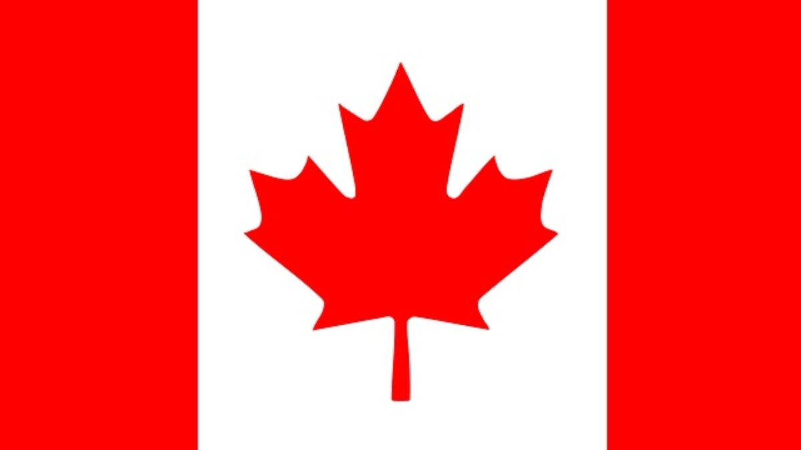

O Canadá é um país localizado na América do Norte. É o segundo país do mundo em extensão territorial. Faz fronteira com os Estados Unidos ao sul e ao noroeste (Alasca) e ao norte com o oceano Atlântico.
O Canadá apresenta um dos melhores indicadores sociais do mundo, desse modo, os índices de analfabetismo são baixos, assim como os de mortalidade infantil e natalidade. A população canadense está envelhecendo, a baixa taxa de natalidade aliada à boa expectativa de vida (80,4 anos) produz uma carência de mão de obra, pois aproximadamente 15% da população têm mais de 65 anos, fato que diminui o PEA (População Economicamente Ativa) do país. O percentual de idosos é alto se comparado ao de outros países.
O desprovimento de mão de obra suficiente para o setor produtivo tem promovido o ingresso no país de um grande número de trabalhadores estrangeiros. É bom lembrar que isso acontece somente em períodos de economia aquecida.